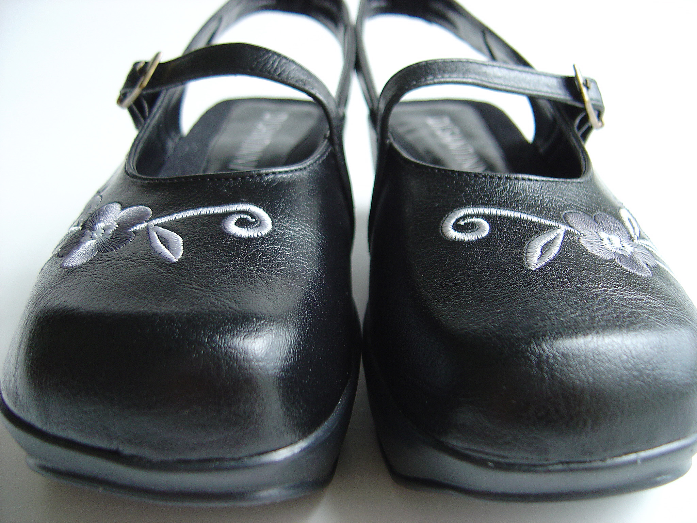

Settings
To toggle fullscreen on / off, press f.
To toggle notes on / off, press n.

Outline
- We'll cover this
- and this
- and this other thing, too
- We'll do this first
- next, this
- and finally, this other thing, too
Here's a code example
let message = "JavaScript is cool!";
String.prototype.shout = function(){
return this.toUpperCase();
}
console.log(message.shout());
Here's a code example
let message = "JavaScript is cool!";
String.prototype.shout = function(){
return this.toUpperCase();
}
console.log(message.shout());
Here's an image

Here's a white background
Here's an example with highlighting
Use this sparingly, of course...
Side-by-side examples
Side-by-side
- I'm
- on
- the
- left
- I'm
- on
- the
- right
I'm a paragraph on the left side. I'm a paragraph on the left side.
I'm a paragraph on the left side. I'm a paragraph on the left side.
I'm a paragraph on the right side. I'm a paragraph on the right side.
I'm a paragraph on the right side. I'm a paragraph on the right side.